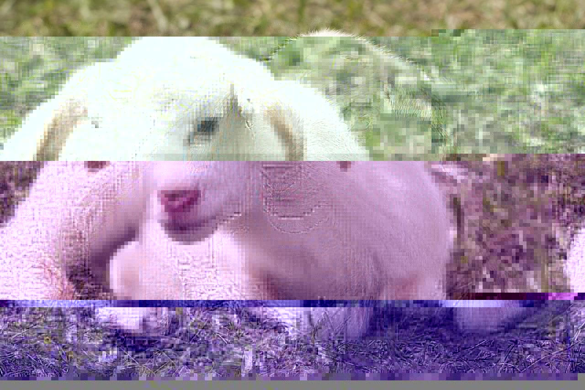
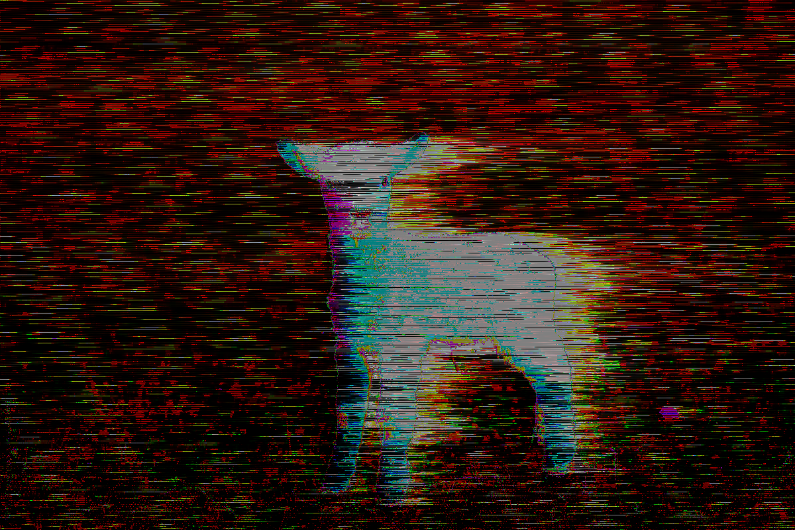
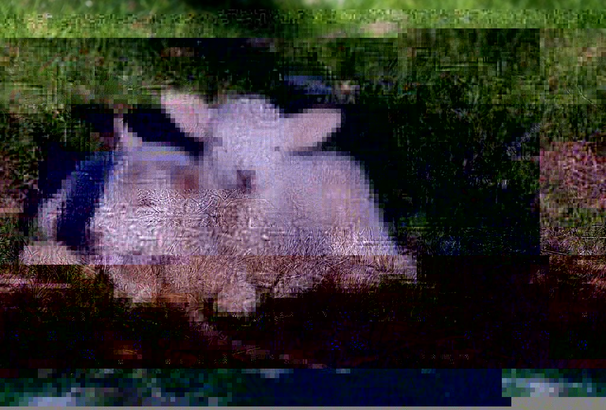

Corruption of Innocence
I decided to use lambs as my main subject for this assignment, as they're one of my favorite animals. I used text-based databending for the first and third images, and Audacity for the second image. For the first image, it was mostly a bunch of back and forth between deleting and spamming text. I just kept "taking my chances" until I ended up with a glitch that looked aesthetically pleasing. For the third image, I eventually took on that same method, but the beginning was a little more "structured." I initially took some lyrics from one of my favorite songs and I just copy and pasted verses throughout the entire text. After seeing the outcome, I went back and randomly deleted some lines and other pieces of data until I ended up with something I liked. For the second image, I just played around with the reverb and distortion in Audacity. It took a few tries before I got something that was a good balance between glitched and legible. I found that if I added too many effects, I would lose the image of the lambs and it'd just be a bunch of random colors. When I think of "glitching," I think of corruption; so if I were to "corrupt" images of lambs, it could represent the corruption of innocence.


